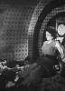
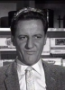
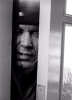
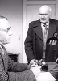

Country:United States, 19 hours
Spoken languages:English
Genres:Action, Adventure, Family, Fantasy, Sci-Fi
Director(s):Gunther von Fritsch, Wallace Worsley Jr., Joseph Zigman
Writer(s):Bruce Elliot, Bruce Geller, Edward Gruskin, Earl Markham, Alex Raymond
Video Codec:Unknown
Number: 1530


Certification:
Storyline:
Space hero Flash Gordon and his crew of the Galaxy Bureau of Investigation patrol space, battling space monsters, power-mad alien dictators and other threats to the stability of the universe.
Cast:    

Medium: Original DVD,
Loaned: No
Aspect ratio: Unknown